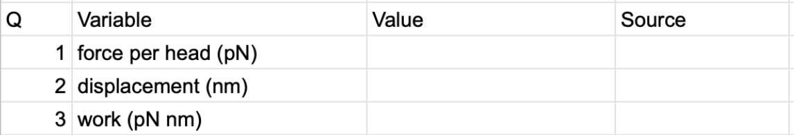
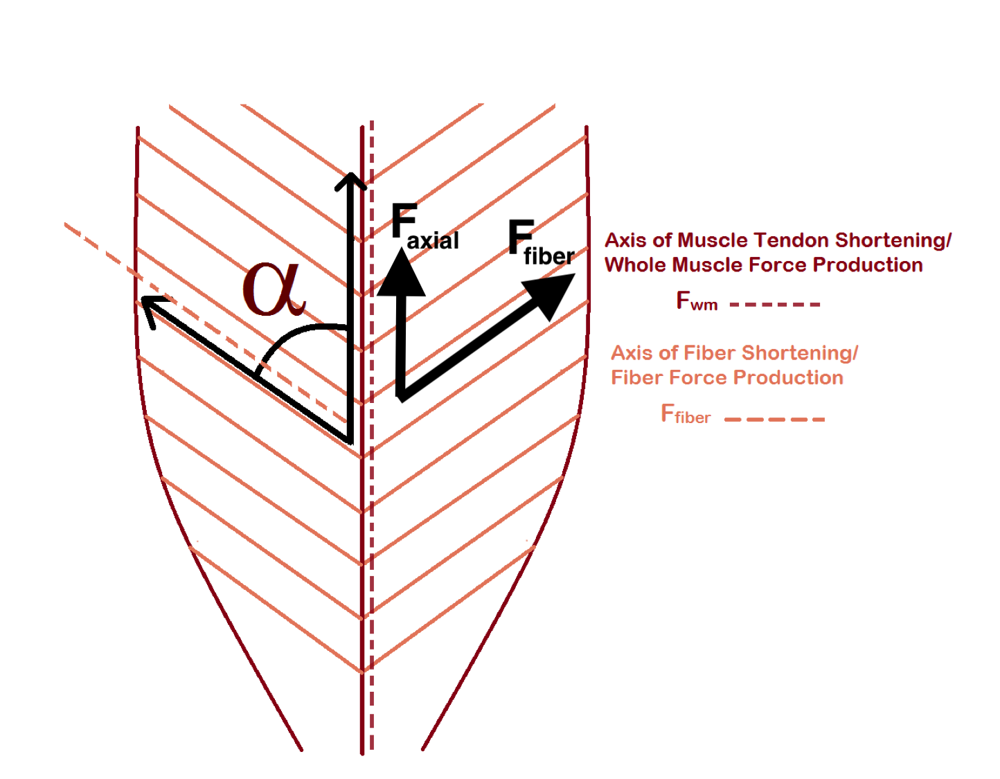

Problem Set 3 Muscle
Create a new google sheet. In the sheet you will create two columns, the first is a list of variable names and the second is the values you look up or compute. In the variable name include the units. The table should start like this…

I would encourage you to add multiple versions of the same variable, each in different units. For example, the units of “work (pN nm)” is not standard. An additional row with “work” in SI units might be helpful to other computations. The value under Q is the numbered step below. Some steps require multiple computations and each computation should have its own variable so there will be more than 19 rows in your table.
Below this table, create the table described in step 14 below.
3.1 A bottom-up model of muscle efficiency
ATP hydrolysis is an exergonic reaction, meaning the products have more free energy than the reactants. The difference in the free energy between the reactants and the products (\(\Delta G\)) can be used to “do something” such as pump ions up their gradient. In muscle contraction, myosin hydrolyzes ATP and the energy from this reaction is used to pivot the myosin head into its “high energy” position. In this position, myosin heads bind to actin and “pulls” the thin filament toward the center of the sarcomere. The energy for this pull comes from the stored elastic strain energy in the pivoted head. This is very much like the stored elastic strain energy in a stretched rubber band, which can be used to launch objects (the mechanism of a sling shot).
This transfer of energy from the ATP to the pivoted myosin head and from the pivoted myosin head to the pull on the thin filament is not perfect – some is lost as heat.
Energy from ATP hydrolysis = Energy to pull thin filament + Energy lost as heat
The ratio
\[\begin{equation} \frac{Energy\_to\_pull\_thin\_filament}{Energy\_from\_ATP\_hydrolysis} \tag{3.1} \end{equation}\]is the thermodynamic efficiency of muscle contraction. More generally, efficiency is a measure of the effectiveness of energy transfer – if there is little wasted energy in the transfer then efficiency is near 100%. If there is lots of wasted energy then efficiency is closer to 0%. And a more general way of thinking about efficiency is \(\frac{useful\_energy}{total\_energy}\)
What is the efficiency of muscle contraction? There are many ways of estimating this, here we estimate it from the “bottom up” – that is using measures of the numerator and denominator in equation (3.1).
The numerator, the energy to pull the thin filament, is the work done by the myosin on the thin filament. Remember that Work = Force \(\times\) distance. To estimate this, we need a measure of the active force that a single myosin head applies to a thin filament and the displacement of the thin filament when the head pulls it toward the center of the sarcomere. And for the denominator, we need the change in free energy (\(\Delta G\)) of the hydrolysis of ATP in working muscle (that is, the conditions in a muscle cell and not “standard” conditions used to calculate textbook \(\Delta G\))
In your Google sheet, compute this efficiency. You will need to
- do a Google search to find measures of the force of a single myosin head. There will be a range of answers. The units will probably be in pN (picoNewtons). In your Google sheet, insert the source (web page) for your number. Also make sure to note the units.
- do a Google search to find measures of the displacement of a thin filament by a single myosin head. The units will probably be in nm (nanonmeters). In your Google sheet, insert the source (web page) for your number. Also make sure to note the units.
- Compute the work done on the thin filament. In a new cell, convert this to SI units.
- do a Google search to find \(\Delta G\) for ATP hyrolysis. Try to find a value relevant to the conditions in a cell and even a muscle cell. In your Google sheet, insert the source (web page) for your number. Also make sure to note the units.
- Use the Google sheet to compute the efficiency. Make sure your units for the computation cancel correctly! This may require extra attention. You should get an answer between about 7% and about 50% depending on your inputs.
3.2 A bottom-up model of whole-muscle force
The maximum force that a whole muscle can generate is proportional to its cross-sectional area (a concept covered in many physiology textbooks). Let’s build a bottom-up model the actual force a muscle generates given its cross-sectional area.
Figure 3.1: Why the force of a myofibril is equal to the force of a single sarcomere and not the sum of the forces over all sarcomeres. The force on each side of non-edge Z discs cancel. Consequently, only the force on the two edge Z discs contribute to the total force.
Some background. A muscle fiber is a bundle of myofibrils. The many thick and thin filaments in a myofibril are serially arranged in the sarcomeres. Even though there are thousands of sarcomeres in series along a myofibril, and all the sarcomeres generate force, the force generated by a myofibril is the force generated by a single sarcomere. This is because the force on the thin filaments on either side of a z-disc cancel due to the sarcomeres on each side pulling the thin filaments in opposite directions (see figure above). And this is why the maximum whole muscle force is proportional to the cross-sectional area. We can estimate the maximum force of a myofibril if we know the number of myosin heads occurring in a single sarcomere. Or we can estimate the maximum force of a whole muscle fiber or whole muscle if we know the number of myofibrils in a transverse section of the fiber or whole muscle.
- Model a muscle that is square in cross-section and that is 5 cm wide and 15 cm long. Compute the cross-sectional area.
- Google search the number of thick filaments per area. Or alternatively, Google search the diameter of a thick filament and the geometry of the arrangement of thick and thin filaments in a section (these are beautiful images) and estimate the number of thick filaments per area. In your Google sheet, insert the source (web page) for your number. Also make sure to note the units.
- Google search the number of myosin molecules in a thick filament. In your Google sheet, insert the source (web page) for your number.
- Given 6-8, compute the number of myosins that would occur in the cross section of the modeled muscle. Use units of µm\(^2\) for your area measures to make sure that units match.
- Google search the duty cycle (or duty ratio), which is the percent of a cross-bridge cycle that a myosin head is in a bound state. In your Google sheet, insert the source (web page) for your number. Also make sure to note the units.
- Given your value for the force of a single myosin head, use 9-10 to compute the maximum force of the muscle in Newtons. Assume: 1) complete overlap of thick and thin filaments and 2) a Ca++ that makes probability of “open” myosin binding site near 100%. In a new cell, convert to pounds and ponder if your result seems reasonable.
- Compute the muscle tension, or specific tension, which is the force per unit area. Use units of Pa, because you will use this below. In a new cell, convert this to kPa and Google search muscle force per area for a fiber or myofibril and see if your number is close. My answer ranged from 150 kPa to 850kPa depending on the head force and displacement.
3.3 Compute the effect of muscle architecture on whole muscle force
Muscle fibers can be arranged in parallel with the main axis of the muscle or at an oblique angle. A pinnate muscle is one with oblique fibers on either side of a central line. Oblique angles allow more fibers in the same muscle volume – the consequence is more force. What is the effect of pinnation angle (\(\alpha\) – the Greek letter alpha) on whole muscle force and displacement?
The force that a fiber generates is directed parallel to the fiber. The working force of a muscle is parallel to its long axis. If fibers are oblique, the working force will be the axial component of the total force generated by the fibers.
\[\begin{equation} F_{axial} = F_{fiber} \times cos(\alpha) \end{equation}\]where \(F_{axial}\) is the working force and \(F_{fiber}\) is the total force generated in the direction of the fibers.
To model the effect of fiber angle on whole muscle force, we need to distinguish
Anatomical Cross Sectional Area (ACSA) is simply the area of the section perpendicular to the long axis of the muscle
Physiological Cross Sectional Area (PCSA) is the area of the section perpendicular to the fibers
\(PCSA\) is typically modeled as
\[\begin{equation} PCSA = \frac{muscle\_volume}{mean\_fiber\_length} \end{equation}\]where
\[\begin{equation} muscle\_volume = ACSA \times muscle\_length \end{equation}\]and
\[\begin{equation} mean\_fiber\_length = \frac{0.5 \times muscle\_width}{\mathrm{SIN(\alpha)}} \end{equation}\]This model for mean fiber length doesn’t work at all when \(\alpha=0\) and doesn’t work well until \(\alpha\) is larger than about 10 degrees.
The muscle force in the direction of the fibers is
\[\begin{equation} F_{fiber} = specific\_tension \times PCSA \end{equation}\]Model a muscle that is 15 cm long.
- Use the cross-sectional area computed in step 6 (which is \(ACSA\)) to compute muscle volume
- Create a table with columns Angle, mean fiber length, PCSA, F_fiber and F_axial
- In the Angle column, insert values 0-90° incrementing by 15°
- Use the equations above to compute mean fiber length and \(PCSA\). For \(\alpha = 0\), insert the muscle length for mean fiber length instead of the formula.
- Use the specific tension from step 12 above to compute F_fiber, the whole muscle force in the direction of the fiber
- Compute F_axial, the axial component of the whole muscle force.
- Plot F_axial (y axis) vs. \(\alpha\). Which muscle architecture can be stronger, parallel or pinnate? What is the optimal fiber angle?
